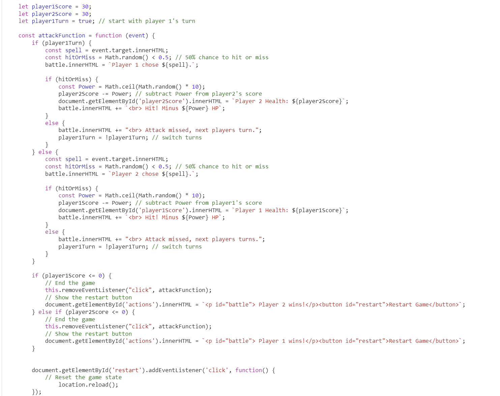

VISUAL DESIGN

Here are some items I noted from peer reviews and expert reviews. Below are some iterations I made to the character attack buttons, player health section, and the character selection page.

CODE FLOW CHART
This is a section of code I would like to update simply because it is a little too repetitive. I know there is a way to shorten it using player data which I plan on implementing hoping it will shorten it and clean it up a bit. The code works now but it could still work and be better.